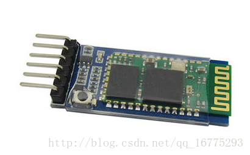

Arduino Note
Arduino 智能小车
Arduino 智能小车————蓝牙篇
蓝牙模块
蓝牙（ Bluetooth® ）：是一种无线技术标准，可实现固定设备、移动设备和楼宇个人域网之间的短距离数据交换（使用2.4—2.485GHz的ISM波段的UHF无线电波）。
我们在此使用的蓝牙模块(HC-05)已经在内部实现了蓝牙协议，不用我们再去自己开发调试协议。这类模块一般都是借助于串口协议通信，因此我们只需借助串口将我们需要发送的数据发送给蓝牙模块，蓝牙模块会自动将数据通过蓝牙协议发送给配对好的蓝牙设备。
串口通信
由于要借助串口实现蓝牙通信功能，所以我们在此要先了解下Arduino的串口通信。
Arduino UNO开发板上的串口为0->RX，1->TX,在开发板内部也已经配置好了串口的功能，我们只需调用函数借口即可。以下列出串口通信里面常用的函数，并加以简单解释，详细用法可在用到时自行查询。
蓝牙模块连接
- TX：接Arduino UNO开发板”RX”引脚
- RX：接Arduino UNO开发板”TX”引脚
- GND：接Arduino UNO开发板”GND”引脚
- VCC：接Arduino UNO开发板”5V”或”3.3V”引脚
手机蓝牙助手
想实现手机蓝牙遥控小车，手机APP是必不可少的，目前网上有很多蓝牙串口助手，省去了我们自己写APP的时间，当然如果朋友你有能力或者想自己DIY的话也可以尝试自己写APP，在这里我推荐大家用这款手机蓝牙助手（百度上搜手机蓝牙串口助手就可以搜到，挺好用的）
#define STOP 0
#define FORWARD 1
#define BACKWARD 2
#define TURNLEFT 3
#define TURNRIGHT 4
int leftMotor1 = 4;
int leftMotor2 = 5;
int rightMotor1 = 6;
int rightMotor2 = 7;
void setup() {
// put your setup code here, to run once:
Serial.begin(9600);
pinMode(leftMotor1, OUTPUT);
pinMode(leftMotor2, OUTPUT);
pinMode(rightMotor1, OUTPUT);
pinMode(rightMotor2, OUTPUT);
}
void loop() {
// put your main code here, to run repeatedly:
//usart read
if(Serial.available()>0)
{
char cmd = Serial.read();//读取蓝牙模块发送到串口的数据
Serial.print(cmd);
motorRun(cmd);
}
}
void motorRun(int cmd)
{
switch(cmd){
case FORWARD:
Serial.println("FORWARD"); //输出状态
digitalWrite(leftMotor1, HIGH);
digitalWrite(leftMotor2, LOW);
digitalWrite(rightMotor1, HIGH);
digitalWrite(rightMotor2, LOW);
break;
case BACKWARD:
Serial.println("BACKWARD"); //输出状态
digitalWrite(leftMotor1, LOW);
digitalWrite(leftMotor2, HIGH);
digitalWrite(rightMotor1, LOW);
digitalWrite(rightMotor2, HIGH);
break;
case TURNLEFT:
Serial.println("TURN LEFT"); //输出状态
digitalWrite(leftMotor1, HIGH);
digitalWrite(leftMotor2, LOW);
digitalWrite(rightMotor1, LOW);
digitalWrite(rightMotor2, HIGH);
break;
case TURNRIGHT:
Serial.println("TURN RIGHT"); //输出状态
digitalWrite(leftMotor1, LOW);
digitalWrite(leftMotor2, HIGH);
digitalWrite(rightMotor1, HIGH);
digitalWrite(rightMotor2, LOW);
break;
default:
Serial.println("STOP"); //输出状态
digitalWrite(leftMotor1, LOW);
digitalWrite(leftMotor2, LOW);
digitalWrite(rightMotor1, LOW);
digitalWrite(rightMotor2, LOW);
}
}
代码详解
串口初始化函数，想要通过串口的库函数对串口进行操作，必须在void set_up()函数中对其进行初始化。
Serial.begin(9600);
在void loop()函数内，加入了检测串口接收内容的函数，并将接收到的命令输入到 void motorRun(int cmd)函数中控制小车运动。
if(Serial.available()>0)
{
char cmd = Serial.read();
Serial.print(cmd);
motorRun(cmd);
}